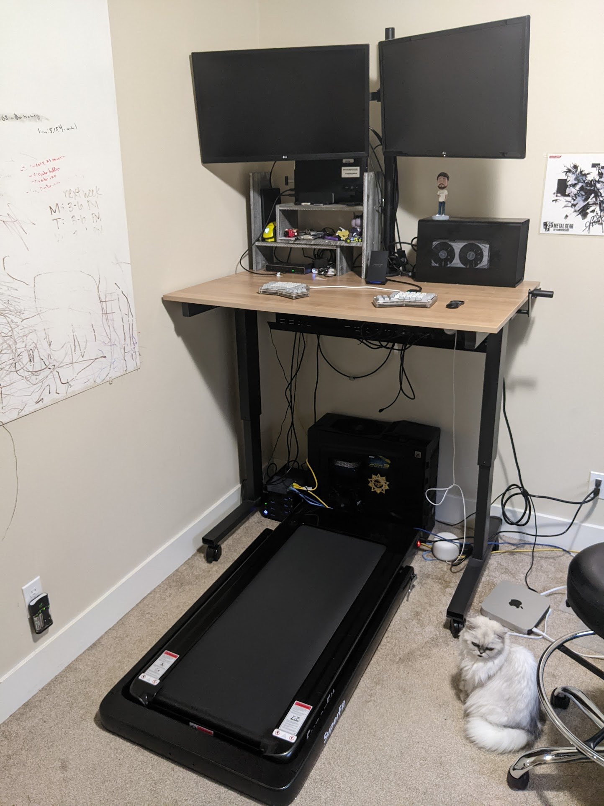

Walking desk treadmill
With work from home becoming a likely permanent fixture of my life, and being in front of my computer 8 hours accompanying that, I’ve been looking at ways to try get some exercise in.
So I got a walking treadmill for under my desk.

Background #
I’ve been using a standing desk for about 18 months. However, it’s been very difficult to stand for the whole time. My feet would hurt, or I would get restless.
Eventually to help I got a tall office chair, and alternated between that and standing. However, I’d often contort myself in the office chair, and would end up sitting with poor posture for long periods of time.
In addition I’m often in meetings rather than doing deep work, and it’s difficult to sit through meetings for prolonged periods of time. I would get fidgity or find myself drifting to activities on my other monitor, which made me a worse participant in meetings.
I thought that the regular motion required with a walking treadmill would help with my concentration, and keep my body moving throughout the day.
The Treadmill #
I purchased the Goplus 2 in 1 treadmill.
Weight #
My original goal was to find a treadmill that was light enough that I can move in and out of my desk. the Goplus was one of the lightest I can find, but at 70 pounds, it wasn’t particularly easy to move around. I now leave it under my desk and walk or stand the whole time.
Track Area #
The dimensions of the walking area is important: it’ll be your walking surface for multiple hours at a time.
The Goplus has an area of 40” by 16”. The 16” isn’t very wide: I’ve had to rotate my hips much more than I would normally when walking. The 40” length hasn’t really been an issue, but doesn’t leave a significant amount of slack.
The Shoes #
When I first walked on my treadmill, I did so in socks, and my feet really started to hurt after 3-4 hours. I tried some slip on loafers and it’s helped a lot.
Foot pain #
Since I’ve been using the shoes, I have been able to walk for about 1.5-2 hours without much issue: during days where I’m in meetings all day I don’t really notice fatigue from walking.
The foot pain walking with shoes is actually must lower than standing: I think this is because walking forces you to rotate where the pressure is on your feet, which naturally prevents prolonged stress on any one part.
Impact on focus #
Walking in meetings has helped me significantly with focus. The movement prevents me from fidgiting, and the constant use of my mental capacity to walk gives me no choice to focus on only one other task: the meeting itself.
The routine #
I started in December at the default pace of 0.6 miles per hour. Over the course of a month, I’ve gone up to walking 0.8 comfortably. And I think I may be able to walk faster.
My routine has a natural break in the middle for lunch: so I walk 2-3 hours in the morning (hopping off a couple of times for snack or bathroom breaks), take the 1 hour break for lunch, and then another 3-4 hours before signing off for the day.
After a couple of weeks, I can do the whole day without a break, but my legs do feel sore and I generally sit or lie down to give my legs rest after work for about an hour. After the break I sometimes hop right back on to do some personal computing tasks: the long stretches that are the most difficult.
What I would do differently next time #
- 16” for width on a treadmill is uncomfortable, for my 6’ frame. I would get a wider treadmill.
Energy after work #
I have more energy after walking all day, and during meetings: I feel more alert since the constant exercise helps keep my blood pumping, and in the same way I feel more energetic after a hard workout, I notice I have more energy after walking.
Conclusion #
Although I originally felt a walking treadmill was an excessive addition to my setup, it has helped alleviate a lot of the problems I faced when working in front of my desk for eight hours a day.
After about a month, it feels more natural to me that sitting, and it has had positive impact on my health, both physically and mentally.